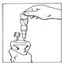
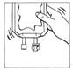
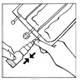

RÉSUMÉ DES CARACTÉRISTIQUES DU PRODUIT
ANSM - Mis à jour le : 10/06/2014
CERNEVIT, poudre pour solution injectable ou pour perfusion
2. COMPOSITION QUALITATIVE ET QUANTITATIVE
1 flacon (5 ml) contient:
Rétinol (Vitamine A) ......................................................................................................................... 3500 UI
Sous forme de palmitate de rétinol
Cholécalciférol (Vitamine D3) ............................................................................................................. 220 UI
Alpha-tocophérol (Vitamine E) ....................................................................................................... 11,200 UI
Quantité correspondant à DL alpha-tocophérol ............................................................................. 10,200 mg
Acide ascorbique (Vitamine C) ................................................................................................... 125,000 mg
Thiamine (Vitamine B1) .................................................................................................................. 3,510 mg
Sous forme de tétrahydrate de cocarboxylase ............................................................................... 5,800 mg
Riboflavine (Vitamine B2) .............................................................................................................. 4,140 mg
Sous forme de phosphate sodique de riboflavine dihydraté ........................................................... 5,670 mg
Pyridoxine (Vitamine B6) ............................................................................................................... 4,530 mg
Sous forme de chlorhydrate de pyridoxine ..................................................................................... 5,500 mg
Cyanocobalamine (Vitamine B12) .................................................................................................. 0,006 mg
Acide folique (Vitamine B9) ........................................................................................................... 0,414 mg
Acide pantothénique (Vitamine B5) .............................................................................................. 17,250 mg
Sous forme de dexpanthénol ...................................................................................................... 16,150 mg
Biotine (Vitamine B8) .................................................................................................................... 0,069 mg
Nicotinamide (Vitamine PP) ......................................................................................................... 46,000 mg
Pour la liste complète des excipients, voir rubrique 6.1.
Poudre pour solution injectable ou pour perfusion.
Gâteau lyophilisé jaune orangé.
4.1. Indications thérapeutiques
Supplémentation vitaminique injectable ou pour perfusion.
Réservé à l'adulte et à l'enfant de plus de 11 ans.
4.2. Posologie et mode d'administration
Un flacon par jour.
Mode d'administration
VOIE INTRAVEINEUSE EXCLUSIVE.
Technique de reconstitution: voir rubrique 6.6.
Après reconstitution: administrer par injection intraveineuse lente (au moins dix minutes) ou en perfusion dans une solution pour perfusion de glucose à 5 % ou de chlorure de sodium à 0,9 %.
L'administration peut être poursuivie pendant la durée de la nutrition parentérale. CERNEVIT peut entrer dans la composition de mélanges nutritifs associant glucides, lipides, acides aminés, électrolytes, sous réserve d'avoir vérifié préalablement la compatibilité et la stabilité dans le cas de chaque mélange nutritif utilisé.
CERNEVIT ne doit pas être utilisé:
· En cas d'hypersensibilité aux principes actifs, notamment à la vitamine B1 ou aux excipients.
· Chez le nouveau-né, le nourrisson et l'enfant de moins de 11 ans.
4.4. Mises en garde spéciales et précautions d'emploi
Mises en garde spéciales
Vérifier l'intégrité du flacon.
Opérer dans des conditions aseptiques.
Ne pas conserver un flacon partiellement utilisé ou présentant une coloration anormale lors de sa reconstitution.
Précautions d'emploi
Du fait de la présence d'acide glycocholique dans les excipients, l'administration répétée et prolongée chez des patients présentant un ictère d'origine hépatique ou une cholestase biologique importante, nécessite une surveillance attentive de la fonction hépatique.
En raison de la présence d'acide folique dans CERNEVIT, l'association aux médicaments antiépileptiques contenant du phénobarbital, de la phénytoïne, ou de la primidone nécessite des précautions d'emploi (voir rubrique 4.5).
En raison de la présence de pyridoxine dans CERNEVIT, l'association à la lévodopa, qui peut réduire l'activité de la L-Dopa, nécessite des précautions d'emploi (voir rubrique 4.5).
Une carence en une ou plusieurs vitamines doit être corrigée par une supplémentation spécifique.
CERNEVIT ne renfermant pas de vitamine K, celle-ci devra être administrée séparément si nécessaire.
La compatibilité doit être testée avant mélange à d'autres solutions pour perfusion et, tout particulièrement, lors de l'ajout de CERNEVIT dans des poches de mélanges binaires de nutrition parentérale, associant du glucose, des électrolytes et une solution d'acides aminés, ainsi qu'aux mélanges ternaires associant du glucose, des électrolytes, une solution d'acides aminés et des lipides.
4.5. Interactions avec d'autres médicaments et autres formes d'interactions
La vitamine B6 peut diminuer l'activité de la L-Dopa car la décarboxylation de la L-Dopa nécessite une enzyme B6 dépendante.
Un inhibiteur de la dopadécarboxylase, tel que la carbidopa, peut être ajouté pour prévenir cette interaction.
+ Anticonvulsivants et acide folique
L'acide folique peut augmenter le métabolisme de certains anticonvulsivants tels que le phénobarbital, la phénythoine et la primidone. Les taux plasmatiques de ces anticonvulsivants seront contrôlés en cas d'utilisation simultanée de folates.
Surveillance clinique et, éventuellement, des taux plasmatiques et adaptation, s'il y a lieu, de la posologie de l'antiépileptique pendant la supplémentation folique et après son arrêt.
Il n'y a pas de données de sécurité sur CERNEVIT quand il est administré pendant la grossesse et l'allaitement. Ce médicament peut être prescrit pendant la grossesse si besoin dans le respect de l'indication et des posologies, de manière à éviter un surdosage vitaminique.
L'utilisation est déconseillée en cas d'allaitement du fait du risque de surdosage en vitamine A chez le nouveau-né.
4.7. Effets sur l'aptitude à conduire des véhicules et à utiliser des machines
Sans objet.
Affections du système immunitaire
Les réactions d’hypersensibilité aux composants de CERNEVIT sont essentiellement dues à des réactions allergiques à la vitamine B1. Les signes cliniques rapportés sont : des éruptions cutanées ou de l’urticaire. L’intensité des réactions peut varier de modérée à sévère.
Un choc anaphylactique a également été observé. La fréquence de ces événements est indéterminée : elle ne peut être estimée sur la base des données disponibles.
Déclaration des effets indésirables suspectés
La déclaration des effets indésirables suspectés après autorisation du médicament est importante. Elle permet une surveillance continue du rapport bénéfice/risque du médicament. Les professionnels de santé doivent déclarer tout effet indésirable suspecté via le système national de déclaration : Agence nationale de sécurité du médicament et des produits de santé (Ansm) et réseau des Centres Régionaux de Pharmacovigilance. Site internet : www.ansm.sante.fr.
Les signes résultant d'un surdosage en CERNEVIT sont essentiellement ceux résultant de l'administration de doses excessives de vitamine A.
Signes cliniques d'un surdosage aigu en A (doses supérieures à 150000 Ul):
Affections digestives, céphalées, hypertension intracrânienne, œdème papillaire, affections psychiatriques, irritabilité, voire convulsions, desquamation généralisée retardée.
Signes cliniques d'une intoxication chronique (apport prolongé de vitamine A à des doses supraphysiologiques chez un sujet non carencé):
Hypertension intracrânienne, hyperostose corticale des os longs et soudure précoce épiphysaire. Le diagnostic est généralement porté sur la constatation de gonflements sous-cutanés sensibles ou douloureux au niveau des extrémités des membres. Les radiographies objectivent un épaississement périosté diaphysaire au niveau du cubitus, du péroné, des clavicules et des côtes.
Conduite à tenir en cas de surdosage aigu ou chronique:
Cesser l'administration de CERNEVIT, réduire les apports calciques, augmenter la diurèse et réhydrater.
5. PROPRIETES PHARMACOLOGIQUES
5.1. Propriétés pharmacodynamiques
Classe pharmacothérapeutique: ADDITIFS POUR SOLUTIONS INTRAVEINEUSES/VITAMINES
Code ATC: B05XC
CERNEVIT est une association équilibrée de vitamines hydrosolubles et liposolubles couvrant les besoins quotidiens lors d'une nutrition parentérale.
Les propriétés pharmacodynamiques de CERNEVIT sont celles de chacune des 12 vitamines entrant dans sa composition. Les propriétés principales sont les suivantes:
Vitamine A: Impliquée dans les processus de croissance et de différenciation cellulaires, et dans les mécanismes physiologiques de la vision.
Vitamine D: Régulation du métabolisme du calcium et du phosphore au niveau des os et des reins.
Vitamine E: Propriétés anti-oxydantes empêchant la formation de produits d'oxydation toxiques et protégeant les constituants cellulaires.
Vitamine B1: (thiamine) En association avec l'ATP, formation d'un coenzyme intervenant dans le métabolisme des hydrates de carbone.
Vitamine B2: (riboflavine) Action de coenzyme dans le métabolisme énergétique cellulaire, les systèmes de respiration tissulaires et le métabolisme des macronutriments.
Vitamine B3: (PP) Composant des coenzymes NAD et NADP intervenant dans les réactions d'oxydoréduction essentielles pour le métabolisme des macronutriments et la respiration tissulaire.
Vitamine B5: (acide pantothénique) Précurseur du coenzyme A intervenant dans le métabolisme d'oxydation des hydrates de carbone, la néoglucogenèse et la synthèse des acides gras, des stérols, des hormones stéroïdes et des porphyrines.
Vitamine B6: (pyridoxine) Coenzyme dans le métabolisme des protéines, des hydrates de carbone et des graisses.
Vitamine B12: Source exogène nécessaire pour la synthèse des nucléoprotéines et de la myéline, la reproduction cellulaire, la croissance et le maintien d'une érythropoïèse normale.
Vitamine C: Propriétés anti-oxydantes, essentielle pour la formation et le maintien des substances intercellulaires et du collagène, la biosynthèse des catécholamines, la synthèse de la carnitine et des stéroïdes, le métabolisme de l'acide folique et de la tyrosine.
Acide folique: Source exogène nécessaire pour la synthèse des nucléoprotéines et le maintien d'une érythropoïèse normale.
Biotine: Liée à au moins quatre enzymes, intervient dans le métabolisme énergétique dont la néoglucogenèse.
5.2. Propriétés pharmacocinétiques
Chez les patients traités par CERNEVIT, les concentrations plasmatiques en vitamines A, D et E retrouvent un taux normal et s'y maintiennent pendant la nutrition parentérale à long terme.
Les propriétés pharmacocinétiques de CERNEVIT sont celles de chacune des 12 vitamines entrant dans sa composition. Les propriétés principales sont les suivantes:
Vitamine A: Taux sériques normaux compris entre 80-300 UI/ml; liée à une protéine; éliminée principalement par voie biliaire et aussi par voie urinaire.
Vitamine D: Active après hydroxylation dans le foie et le rein; liée à une protéine; excrétée essentiellement par voie biliaire et également par voie urinaire.
Vitamine E: Transportée dans le sang par les lipoprotéines; convertie en lactone dans le foie et excrétée principalement par voie urinaire.
Vitamine B1: (thiamine): Transporté à 90 % par les globules rouges; dans le plasma, majoritairement liée à l'albumine; principalement excrétée par voie urinaire.
Vitamine B2: (riboflavine): Liée à des protéines dans le plasma; taux plasmatiques très variables; excrétée principalement par voie urinaire sous forme libre ou de métabolites.
Vitamine B3: (PP) Trouvée sous forme acide ou amide dans le plasma; excrétée dans les urines sous forme libre ou de métabolites.
Vitamine B5: (acide pantothénique): Présente sous forme libre ou de coenzyme A dans le plasma et les globules rouges; excrétée par voie urinaire.
Vitamine B6: (pyridoxine) Métabolisée dans le foie et éliminée par voie urinaire.
Vitamine B12: Taux sériques normaux de 200-900 pg/ml; liée aux protéines; stockée dans le foie; distribuée dans le lait maternel; 50 à 90 % de l'apport sont éliminés par voie urinaire.
Vitamine C: Réabsorption rénale tubulaire totale aux concentrations normales (8 à 14 mg/l); au-delà, l'excès est excrété par voie urinaire.
Acide folique: Concentrations sériques normales 0,005-0,015 µg/ml; distribution dans tous les tissus; métabolisé et stocké dans le foie; à doses élevées, réabsorption rénale tubulaire insuffisante et excrétion par voie urinaire.
Biotine: Trouvée sous forme libre ou liée à des protéines dans le plasma; stockée principalement dans le foie, et excrétée essentiellement non transformée par voie urinaire.
5.3. Données de sécurité préclinique
Aucune étude préclinique spécifique n'a été effectuée avec CERNEVIT.
Les études de sécurité préclinique effectuées sur chaque composant de CERNEVIT n'ont pas révélé de risque potentiel pour une utilisation dans l'espère humaine.
Glycine, acide glycocholique, lécithine de soja, hydroxyde de sodium, acide chlorhydrique.
Cette spécialité pharmaceutique ne doit pas être mélangée avec d'autres médicaments, excepté ceux mentionnés dans la rubrique 6.6.
2 ans.
6.4. Précautions particulières de conservation
A conserver à une température ne dépassant pas 25°C.
Conserver le conditionnement primaire dans l'emballage.
Après reconstitution, la stabilité physico-chimique a été démontrée pendant 24 heures à 25°C.
D'un point de vue microbiologique, le produit devrait être utilisé immédiatement après reconstitution. S'il n'est pas utilisé immédiatement, la durée et les conditions de conservation avant utilisation sont de la responsabilité de l'utilisateur et ne devraient pas normalement dépasser 24 heures entre 2°C et 8°C sauf si la reconstitution a été effectuée dans des conditions d'asepsie contrôlées et validées.
6.5. Nature et contenu de l'emballage extérieur
Poudre en flacon (verre brun de type I). Boîte de 1, 10 ou 20.
Poudre en flacon (verre brun type I) muni d'un set de transfert BIO-SET. Boîte de 1, 10 ou 20.
Toutes les présentations peuvent ne pas être commercialisées.
6.6. Précautions particulières d’élimination et de manipulation
Cette spécialité pharmaceutique ne doit pas être mélangée avec d'autres médicaments sauf si la compatibilité et la stabilité du mélange ont été démontrées (voir rubrique 4.2 Posologie et mode d'administration). Dans ce cas, veuillez contacter le fabricant pour obtenir des informations complémentaires.
La compatibilité des solutions administrées simultanément par la même tubulure doit être vérifiée.
CERNEVIT (flacon sans BIO-SET)
A l'aide d'une seringue, injecter dans le flacon 5 ml d'eau pour préparations injectables ou de solution de glucose 5 % ou de chlorure de sodium à 0,9 %.
Agiter légèrement pour dissoudre la poudre.
La solution obtenue est de couleur jaune-orangé.
CERNEVIT BIO-SET
Cernevit BIO-SET permet une reconstitution directe dans les poches (poches en plastique simple ou multi-compartiment) comportant un site de supplémentation.
Poche simple:
|
1. Enlever le capuchon en le tournant puis en le tirant pour casser la bague de sécurité. |
|
|
2. Connecter directement le BIO-SET au site de supplémentation de la poche |
|
|
3. Appliquer une pression sur la partie mobile transparente du BIO-SET pour perforer le bouchon en caoutchouc du flacon. |
|
|
4. Tenir en position verticale le système connecté (CERNEVIT BIO-SET/poche de perfusion), la poche étant au-dessus. Presser doucement la poche de perfusion plusieurs fois pour transférer de la solution dans le flacon (environ 5 ml). Agiter le flacon pour dissoudre CERNEVIT. |
|
|
5. Retourner le système connecté en le tenant verticalement la poche étant en bas. Presser doucement la poche de perfusion plusieurs fois pour faire passer l'air de la partie supérieure de la poche dans le flacon, permettant ainsi le retour de la solution dans la poche de perfusion. |
 |
|
6. Répéter les instructions 4 et 5 jusqu'à ce que le flacon soit vide |
|
|
7. Retirer le flacon de CERNEVIT BIO-SET et le jeter. |
|
|
8. Mélanger doucement. |
 |
Poche multi-compartiment:
La reconstitution de CERNEVIT BIO-SET doit être effectué avant la reconstitution de la poche multi-compartiment (avant ouverture des soudures non permanentes et avant le mélange du contenu des compartiments).
|
1. Placer la poche multi-compartiment sur un plan de travail |
|
|
2. Enlever le capuchon de CERNEVIT BIO-SET en le tournant puis en le tirant pour casser la bague de sécurité |
|
|
3 Connecter directement le BIO-SET au site de supplémentation de la poche multi-compartiment |
|
|
4. Appliquer une pression sur la partie mobile transparente du BIO-SET pour perforer le bouchon en caoutchouc du flacon |
 |
|
5. Tenir le flacon verticalement partie supérieure vers le haut. Presser doucement le compartiment plusieurs fois pour transférer de la solution dans le flacon (environ 5 ml). Agiter le flacon pour dissoudre CERNEVIT. |
|
|
6. Retourner le système connecté en tenant le flacon verticalement partie supérieure vers le bas. Presser doucement le compartiment plusieurs fois pour faire passer l'air de la partie supérieure du compartiment dans le flacon permettant ainsi le retour de la solution dans la poche de perfusion. |
|
|
7. Répéter les étapes 5 et 6 jusqu'à ce que le flacon soit vide. |
|
|
8. Retirer le flacon de CERNEVIT BIO-SET et le jeter. |
|
|
9. Enfin, reconstituer la poche multi-compartiment |
|
|
10. Mélanger en retournant la poche au moins 3 fois. |
Avertissement:
Faire attention à ce que le BIO-SET ne se déconnecte pas du site de supplémentation pendant tout le processus de reconstitution.
7. TITULAIRE DE L’AUTORISATION DE MISE SUR LE MARCHE
CLINTEC PARENTERAL S.A.
6, AVENUE LOUIS PASTEUR
B.P. 56
78311 MAUREPAS CEDEX
8. NUMERO(S) D’AUTORISATION DE MISE SUR LE MARCHE
· 356 570-2 ou 340 093 565 702 2: Poudre en flacon (verre brun). Boîte de 1.
· 356 571-9 ou 340 093 565 719 0: Poudre en flacon (verre brun). Boîte de 10.
· 356 572-5 ou 340 093 565 725 1: Poudre en flacon (verre brun). Boîte de 20.
· 362 011-1 ou 340 093 620 111 8: Poudre en flacons (verre brun) + set de transfert BIO-SET. Boîte de 1.
· 362 012-8 ou 340 093 620 128 6: Poudre en flacons (verre brun) + set de transfert BIO-SET. Boîte de 10.
· 362 013-4 ou 340 093 620 134 7: Poudre en flacons (verre brun) + set de transfert BIO-SET. Boîte de 20.
9. DATE DE PREMIERE AUTORISATION/DE RENOUVELLEMENT DE L’AUTORISATION
[à compléter par le titulaire]
10. DATE DE MISE A JOUR DU TEXTE
[à compléter par le titulaire]
Sans objet.
12. INSTRUCTIONS POUR LA PREPARATION DES RADIOPHARMACEUTIQUES
Sans objet.
Liste I.
Médicament soumis à prescription médicale.